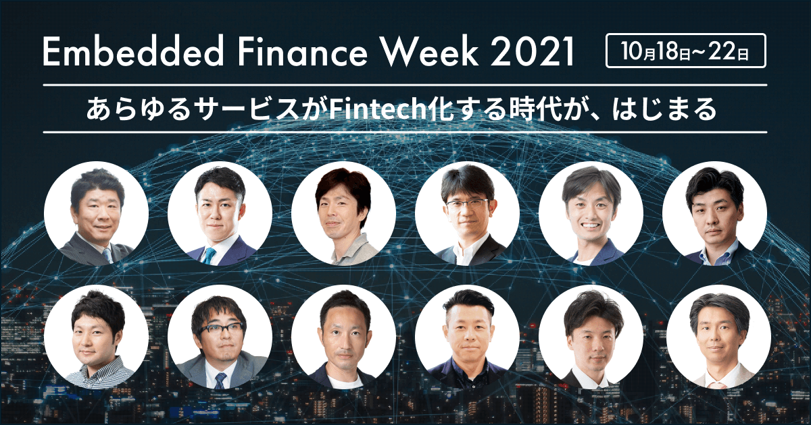

2021年10月18日（月）〜10月22日（金）の5日間、Embedded Finance（エンベデッド金融）をテーマにした日本初のオンラインカンファレンス「Embedded Finance Week 2021」を開催します。
長引く新型コロナウイルスの影響でビジネスのあり方への急速な変化が求められる中、デジタル化を起点として様々な分野で新たなビジネス創造が展開されています。その一つの潮流として、企業が顧客に提供するサービスに、金融機能を部品化して組み込む「Embedded Finance」が注目を集めています。例えば、自社アプリに決済機能を組み組む、決済履歴をもとに保険や融資などの金融サービスをユーザーに提案する、マーケティングやCRMに活用するなど、これまでにない新たなビジネスチャンスが広がっています。
今回のオンラインカンファレンスでは、国内外で注目されている「Embedded Finance」の概論をお話しするとともに、いち早く自社サービスに金融機能の組み込みを実践する様々な業界での先端企業の取り組み事例を紹介します。
「Embedded Finance」に興味のある方はもちろん、さらに理解を深めたい方、新たな顧客体験やビジネス創出に関心のお持ちの方はどなたでも無料で参加可能です（事前登録制）。
「Embedded Finance Week 2021」開催概要
会期：2021年10月18日（月）〜10月22日（金）全5日間
（12時00分〜13時00分/17時00分〜18時00分）
開催方法：オンラインによるライブ配信
参加費：無料（事前登録制）
主催：株式会社インフキュリオン
サイト：https://event.infcurion.com/
お問い合わせ：「Embedded Finance Week 2021」イベント事務局
e-mail：pr@infcurion.com
「Embedded Finance Week 2021」の主なセッション
DAY1-1 10.18 [MON] 12:00 – 13:00
データと事例で読み解く！生活と社会のデジタルシフトと「BaaS＋Embedded Finance」の潮流
登壇者：
株式会社 日経BP 日経FinTech編集長 岡部 一詩 氏
株式会社インフキュリオン コンサルティング 森岡 剛
QRコード決済の爆発的普及とともに、コロナ禍による生活スタイルの変化が、買い物・生活・金融におけるデジタルサービス利用を後押ししています。いかなる業種においても、「BaaSとEmbedded Financeをどう使って自社サービスの付加価値を向上できるか？」を考えるべき時代がきました。
本セミナーでは、独自の調査データと国内外の事例をもとに「BaaS＋Embedded Finance」の潮流を詳細に解説します。
お申し込みはこちら
https://us06web.zoom.us/webinar/register/WN_2fS2LasLTl-Ogh7tg84VTw
DAY1-2 10.18 [MON] 17:00 – 18:00
NEOBANKが実現する日本版Embedded Finance
登壇者：
住信SBIネット銀行株式会社 執行役員 直海 知之 氏
株式会社インフキュリオンBaaSプラットフォーム事業部 ビジネス開発部 副部長 伊與 隆博
「NEOBANK」構想を掲げ、銀行としてのインフラを銀行以外の事業者に提供し、JALやヤマダホールディングスなどと「Embedded Finance」の取り組みを加速させている住信SBIネット銀行。執行役員の直海 知之氏をお迎えし、「NEOBANK」が目指す「日本版Embedded Finance」の全貌に迫ります。
お申し込みはこちら
https://us06web.zoom.us/webinar/register/WN_F0d7RdKxTWu6QsSQMjpaBA
DAY2-1 10.19 [TUE] 12:00 – 13:00
「Coke ON」の進化によるコンシューマーとの関係づくり
登壇者：
日本コカ・コーラ株式会社 ベンディング事業部 Equipment & Digital Platform Manager 永井 宏明 氏
株式会社インフキュリオン執行役員 CEO室室長 CMO（Chief Marketing Officer）末澤 慶海
2016年にサービスをスタートさせ、3000万ダウンロードを突破したコカ・コーラ公式アプリ「Coke ON」は、2018年に決済機能「Coke ON Pay」を開始。その後様々決済サービスに対応し、2021年4月からはサブスクリプション型サービス「Coke ON Pass」を追加するなど自動販売機チャネルでの決済サービスの選択肢を拡げています。Embedded Financeのモデルケースともいえる「Coke ON」を通じたコンシューマーとの関係づくりやデータを活用した最新マーケティングの各種事例、「Coke ON」の今後の展望についてお話します。
お申し込みはこちら
https://us06web.zoom.us/webinar/register/WN_bakYXLesSmylO92OCbkmhw
DAY2-2 10.19 [TUE] 17:00 – 18:00 マネーフォワード Pay for Business が目指す世界
登壇者：
株式会社マネーフォワード 執行役員 福岡拠点長 ウォレット事業部部長 黒田 直樹 氏
株式会社インフキュリオン BaaSプラットフォーム事業部 ビジネス開発部 副部長 秋田 康男
コロナ禍における非接触ニーズの増大などで日本のキャッシュレス決済は普及の兆しを見せ始めている中、ビジネス領域ではまだまだクレジットカードをはじめとするキャッシュレス決済導入が進んでいない現状があります。こうした中、2021年9月にマネーフォワードはキャッシュレス決済プラットフォーム「マネーフォワード Pay for Business」を発表し、「マネーフォワード クラウド」とリアルタイムでデータ連携できる事業用プリペイドカード「マネーフォワード ビジネスカード」の提供を開始しました。本セミナーでは、「マネーフォワード Pay for Business 」が目指す世界観や、「マネーフォワード ビジネスカード」の特長や独自与信による後払い機能等についてデモを交えご紹介します。また、カード提供に至った背景や今後の展望についてもお話しいたします。
お申し込みはこちら
https://us06web.zoom.us/webinar/register/WN_GoTfHTs_TcqMg7gN-skgqg
DAY3-1 10.20 [WED] 12:00 – 13:00 NTTドコモが展開するデジタル金融サービス
登壇者：
株式会社NTTドコモ 執行役員 金融ビジネス部長 江藤 俊弘 氏
株式会社インフキュリオン 代表取締役社長 丸山 弘毅
NTTドコモでは金融領域をスマートライフ事業の柱とすべく、これまで「dカード」や「d払い」に加え、「投資」「融資」「保険」分野においてFinTechサービスの提供を行ってきました。本セミナーでは、NTTドコモのこれまでのFinTechサービスの取り組みを踏まえ、今後の金融デジタルサービスの展望についてお話します。
お申し込みはこちら
https://us06web.zoom.us/webinar/register/WN_5VGOJ7bURwO29aRvWOXR4A
DAY3-2 10.20 [WED] 17:00 – 18:00 リテールDXの最新動向と「Embedded Finance」への期待
登壇者：
日本マイクロソフト株式会社 エンタープライズ事業本部 流通業施策担当部長 藤井 創一 氏
株式会社インフキュリオン BaaSプラットフォーム事業部 ビジネス開発部 副部長 伊與 隆博
小売業はディスラプターの出現やコロナ禍での生き残りと持続的成長に向け、DXへの取り組みを加速しています。本セミナーでは、DX導入を支援するマイクロソフトの取り組み事例とともに、「Embedded Finance」という新潮流の中で小売業が自社サービスに金融機能を実装したユースケースや多様化するキャッシュレス決済手段に関する業界のニーズやトレンドについてお話します。
お申し込みはこちら
https://us06web.zoom.us/webinar/register/WN_2gIXihBgQqaDvCafIkj5jA
DAY4-1 10.21 [THU] 12:00 – 13:00 「Embedded Finance」を支えるテクノロジー
登壇者：
大日本印刷株式会社 情報イノベーション事業部 PFサービスセンター マーケティング・決済プラットフォーム本部 本部長
土屋 輝直 氏
株式会社インテリジェント ウェイブ 営業本部 本部長 朝倉 康介 氏
株式会社インフキュリオン 代表取締役社長 丸山 弘毅
オープンAPIを活用して金融機能をさまざまなサービスに組み込む「Embedded Finance」が国内外で脚光を浴びています。
本セミナーでは、「Embedded Finance」の概要説明に加え金融サービスを自社事業に実装しているユースケースを踏まえながら「Embedded Finance」を実現するナレッジやテクノロジーについて、株式会社インフキュリオン代表の丸山弘毅と、長年にわたって金融機関や企業に各種決済サービスを提供してきた大日本印刷株式会社 情報イノベーション事業部 PFサービスセンター マーケティング・決済プラットフォーム本部 本部長の土屋 輝直氏と株式会社インテリジェント ウェイブ 営業本部長 朝倉康介氏をお迎えして、ディスカッションしていきます。
お申し込みはこちら
https://us06web.zoom.us/webinar/register/WN_GN7ScD6fRrKXCkocyoWjXg
DAY4-2 10.21 [THU] 17:00 – 18:00 インフキュリオンのサービス紹介と最新事例
登壇者：
株式会社インフキュリオン BaaSプラットフォーム事業部 ビジネス開発部 伊與 隆博（Wallet Station担当）
株式会社インフキュリオン BaaSプラットフォーム事業部 ビジネス開発部 秋田 康男（Xard担当）
自社サービスに金融機能を組み込むことで、新たな付加価値やユーザー体験を提供したいと考えるお客様が増えています。たとえば「アプリに独自の決済機能をつけたい」「自社ブランドで国際カードを発行したい」といったニーズは、インフキュリオンのサービスで、スピーディかつ低コストで実現することができます。本セッションでは、私たちが提供する「Wallet Station」と「Xard（エクサード）」の機能概要と最新導入事例をご紹介します。
お申し込みはこちら
https://us06web.zoom.us/webinar/register/WN_XsJfa35-Re2Xbyvobe_0zA
DAY5-1 10.22 [FRI] 12:00 – 13:00
トヨタファイナンスが目指す「『この町いちばん活動』と、創造したい未来について」
登壇者：
トヨタファイナンス株式会社 この町いちばん企画室 室長 竹原 康博 氏
BaaSプラットフォーム事業部 ビジネス開発部 副部長 伊與 隆博
トヨタグループ国内唯一の金融会社として、自治体や企業と連携し地域が抱える課題に対するソリューション提供を行っているトヨタファイナンスは、交通不便解消を目的としたオンデマンドバスなど、さまざまな地域課題解決に取り組んでいます。トヨタファイナンスが目指す地域貢献のあり方や事例紹介、MaaS時代に向けモビリティ社会の一員として目指すべき未来についてお話します。
お申し込みはこちら
https://us06web.zoom.us/webinar/register/WN_UyewnJVTQ9yi3jdye1VABQ
DAY5-2 10.22 [FRI] 17:00 – 18:00 拡大する「BNPL決済」の市場動向と今後の展開
登壇者：
株式会社ネットプロテクションズ 執行役員 秋山 瞬 氏
株式会社インフキュリオン 執行役員 BaaSプラットフォーム事業部長 CPO（Chief Product Officer）吉中 慎
新たな決済手段として「BNPL（Buy Now, Pay Later）」、後払いの利用が世界中で拡大しています。本セミナーでは、日本で初めてBNPL決済サービスの提供を開始したネットプロテクションズが、国内外のBNPL決済サービスの市場動向および今後の展開についてお話します。
お申し込みはこちら
https://us06web.zoom.us/webinar/register/WN_afujgzCWSq6eVmeP7tnzyA
※セッション内容及び登壇者は予告なく変更される場合があります。あらかじめご了承ください。